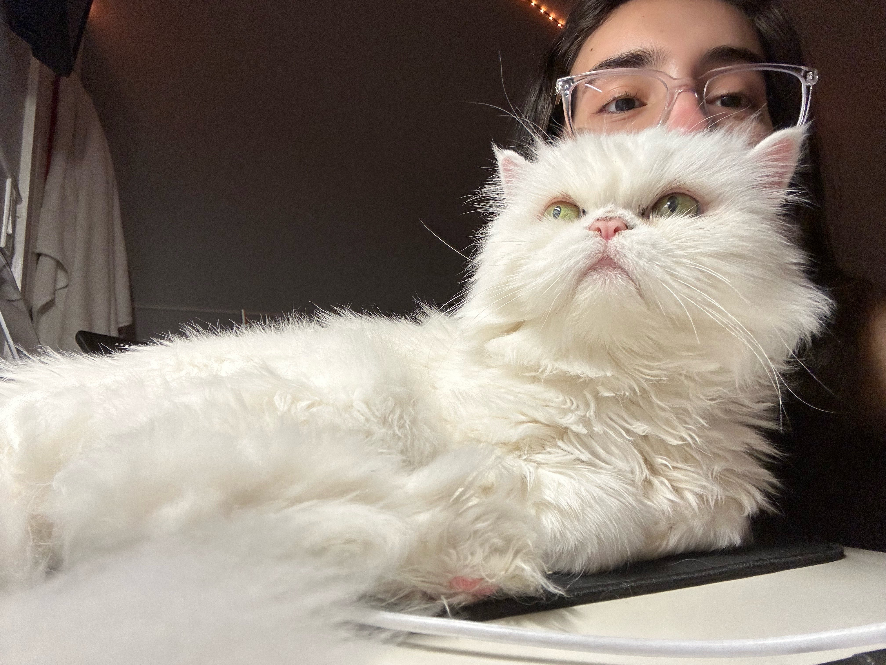

What is Lili Interested In?
Thrifting
I love to go shopping, but alas I am a college student trying to save money.
So, I go thrifting often with friends or family to get cool pieces for my wardrobe at a good price! It's one of my favorite pastimes.
Music
My music taste is kind of all over the place, but my top genres are Alternative and Pop. I listen to music pretty much all the time, with almost 700 hours of listening on my headphones I've had for less than a year. It keeps my brain occupied! You can check out my Spotify here.
PC Building
Over the past summer, I took on the task of building my own PC from scratch, and assembled it with my best friend who knew next to nothing about PCs lol. The whole process picking my parts and actually assembling was very fun, although extremely nerve-wracking. It did pique my interest in pursuing it more as a hobby. I look forward to building more in the future!
Gaming
I enjoy spending my free time gaming with friends, or on my own. Whether it be Valorant, Minecraft, random horror games, or even a nostalgic childhood MMO. You can also catch me playing some console games like The Last Of Us or the Persona Series.
Cats
I love cats. Here's my cat, Lulu :D
